Qui vanno 4-5 frasi dei vostri clienti, con il loro permesso.
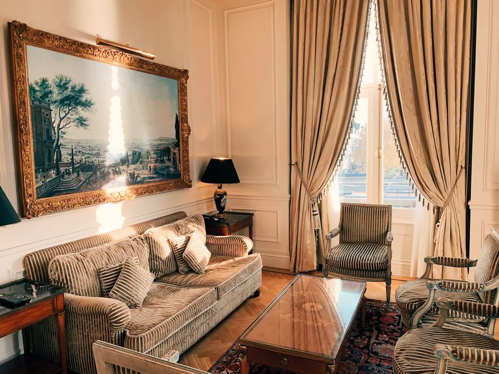
«Immobildream non vende sogni ma solide realtà.»
Quanto vale oggi la sua casa?
Glielo diciamo senza fretta. Prima una stima indicativa, qui. Poi un consulente viene a vederla, di persona.
Scopra quanto valeGratuita, riservata, senza impegno
Si accomodi.
Vendere una casa non è una pratica. È una decisione che si prende con calma, parlando con qualcuno che il mestiere lo conosce. È il modo in cui lavoriamo da oltre 40 anni.
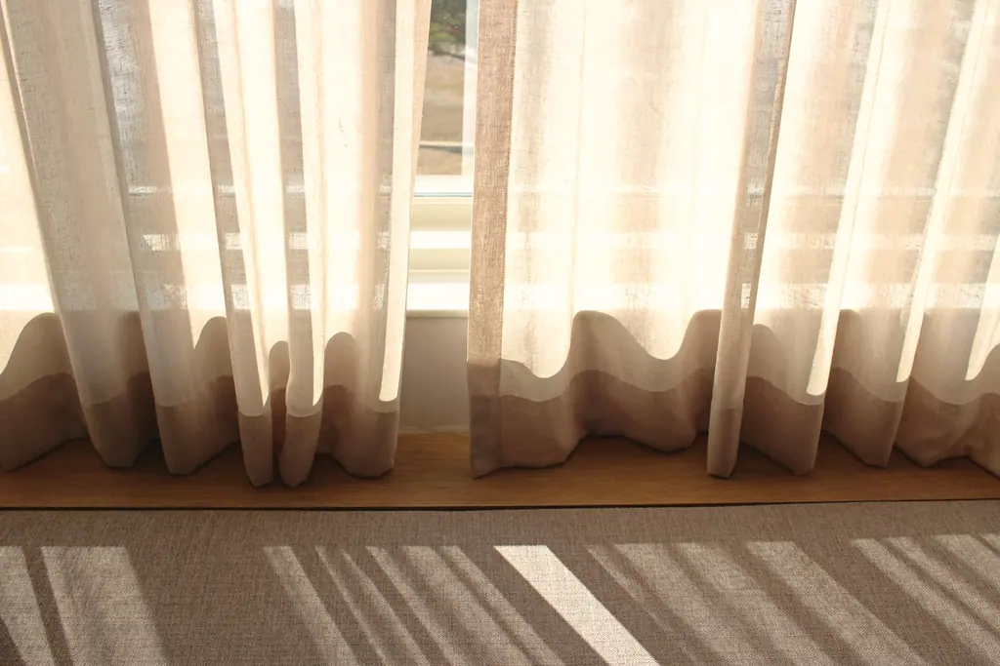
Con discrezione.
Il suo nome e la sua casa restano tra lei e noi. Non mettiamo mai in pagina nomi o fotografie dei clienti.
Di persona.
La stima online è un punto di partenza. La valutazione vera la fa un consulente, dopo aver visto la casa.
Un consulente, sempre lo stesso.
Dalla prima telefonata alla firma parla con una persona sola, che la sua casa la conosce.
Fotografie, video, virtual tour.
Li organizza Immobildream. Lei apre la porta.
Riservata, se lo desidera.
Se preferisce che non si sappia, la casa non va sui portali: la presentiamo solo a chi può comprarla.
Qualche domanda, e una prima cifra.
Risponda come farebbe a voce. In due minuti ha una stima indicativa. La valutazione vera la fa un consulente, di persona: questa serve a cominciare.
D
Dora, l'assistente di ImmobildreamFa le domande. Poi la segue una persona.
Per provare:
Dora è un'assistente AI. Fa una stima, non una perizia: quella spetta al consulente, dopo il sopralluogo. In questa anteprima risponde con regole scritte da Umbra e da questa pagina non parte nessun dato.
Segnaposto
Qui si collega il vostro valutometro.
Lo inseriamo così com'è, con i vostri valori e la vostra taratura. Lo spazio è già pronto, da computer e da telefono: chi preferisce i campi alle domande trova lo strumento che conoscete.
Nota di Umbra per Immobildream. Online il proprietario qui vede il valutometro, non questo riquadro.
Quello che un calcolo non vede.
Due case nella stessa via, con gli stessi metri, possono valere cifre molto diverse. Per questo la valutazione vera si fa in casa.
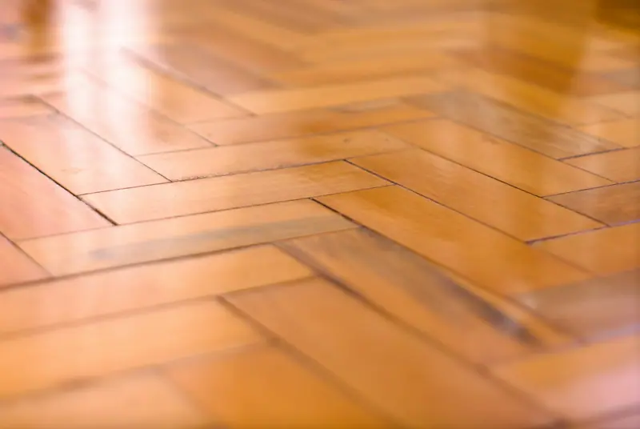
La luce.
A che ora entra il sole, e in quali stanze.
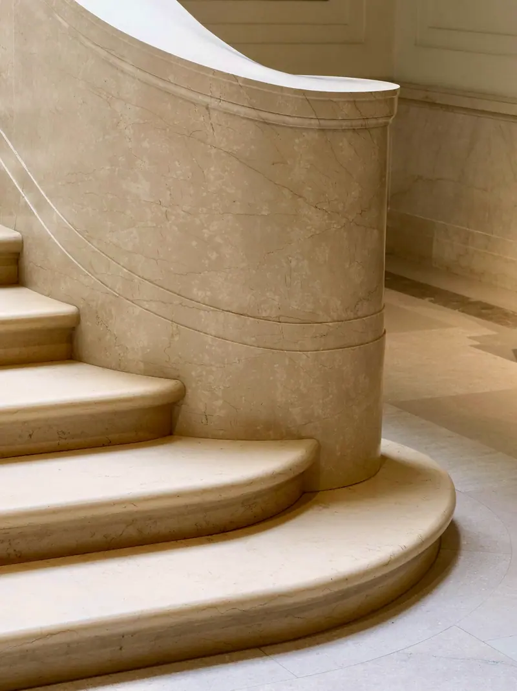
Il palazzo.
L'androne, la scala, il portiere, chi ci abita.
L'affaccio.
Cosa si vede dalle finestre. E cosa si sente.
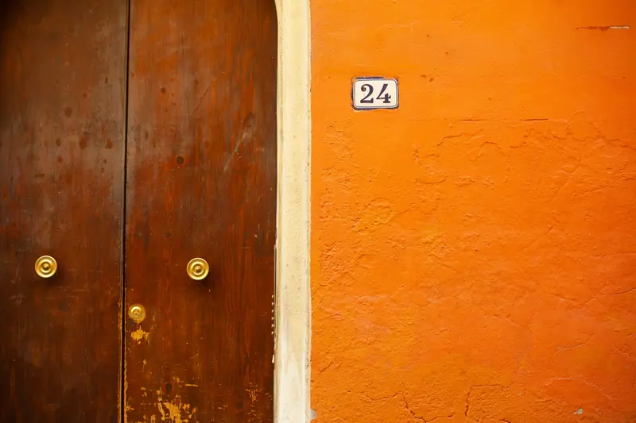
Lo stato.
Impianti, infissi, pavimenti: cosa c'è da fare, e quanto costa.
Le carte.
Planimetria, provenienza, conformità. Meglio saperlo prima.
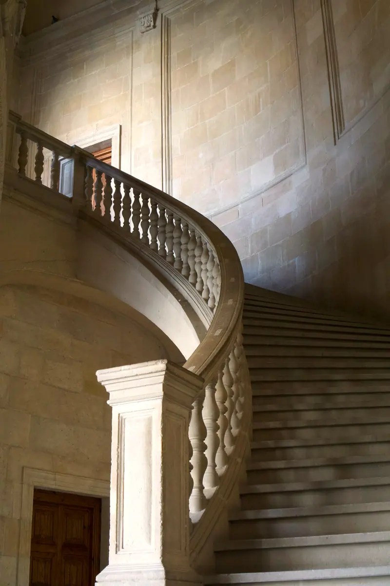
Quattro passi. Fino all'ultimo non ci deve niente.
La prima telefonata.
Ci chiama, o la richiamiamo noi. Risponde un consulente: le chiede della casa, e di cosa ha in mente. Dura poco e non impegna a nulla.
Il sopralluogo.
Un consulente viene a vedere la casa, nel giorno che sceglie lei. Guarda le stanze, la luce, il palazzo, le carte. E ascolta: i tempi, i vincoli, quello che per lei conta.
La strategia.
Le portiamo una valutazione motivata e una proposta: a che prezzo uscire, come presentare la casa, a chi. Nero su bianco, da leggere con calma.
L'incarico.
Se la proposta la convince, firmiamo l'incarico e cominciamo. Se non la convince, ci siamo conosciuti: resta un caffè, e nessun conto.
«Fino all'ultimo passo non ci deve niente.»
A Roma il prezzo cambia girando l'angolo.
Queste sono le zone che conosciamo meglio. Tocchi una targa: trova un intervallo di valori al metro quadro.
Seguiamo anche case fuori Roma. Lì la stima non si fa online: ne parla direttamente con un consulente.
- Valori indicativi, oggi
Cifre d'esempio, messe qui per mostrare la pagina. Online ci vanno i valori di Immobildream.
Ogni casa ha una luce sua.
Prima di presentarla la guardiamo con calma: le stanze, i dettagli, l'ora in cui è più bella. Poi fotografie, video e virtual tour.
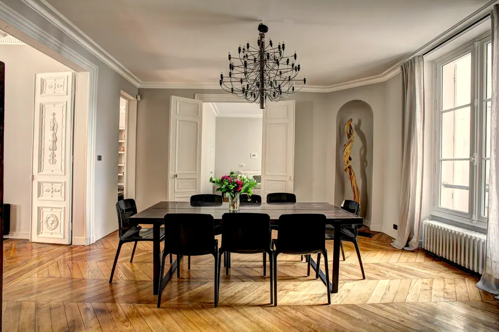
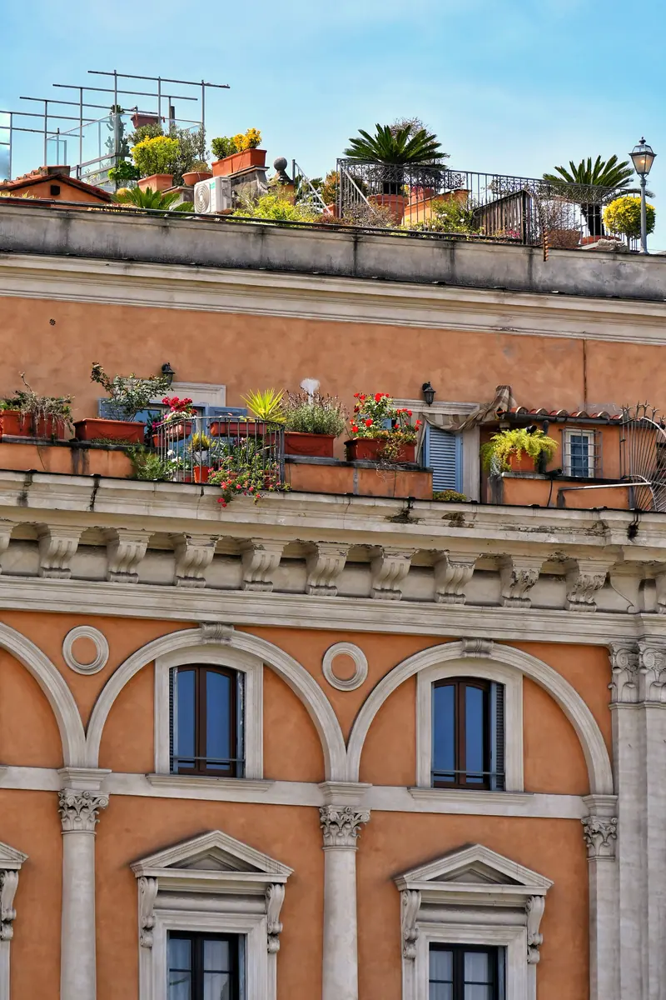
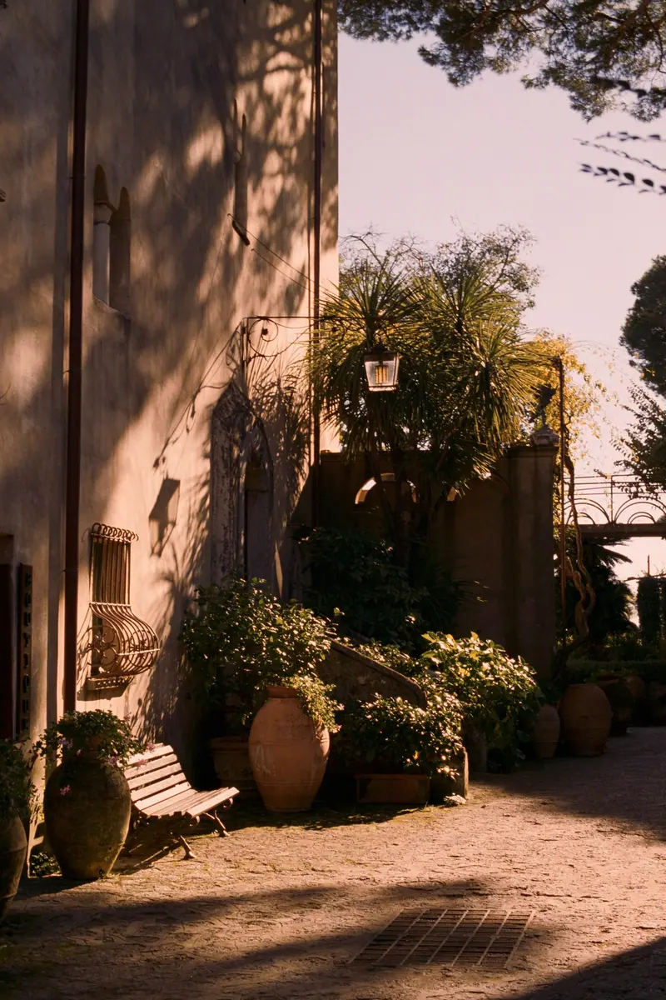
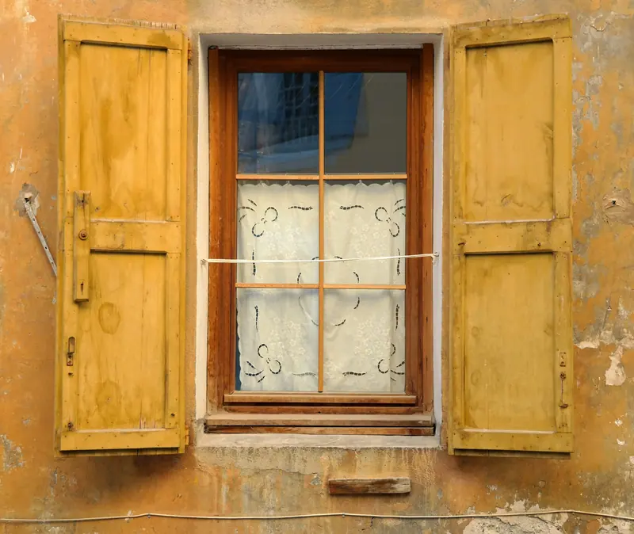

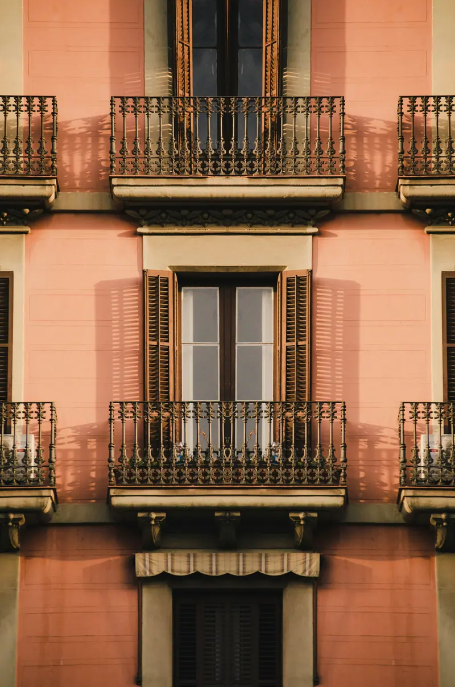
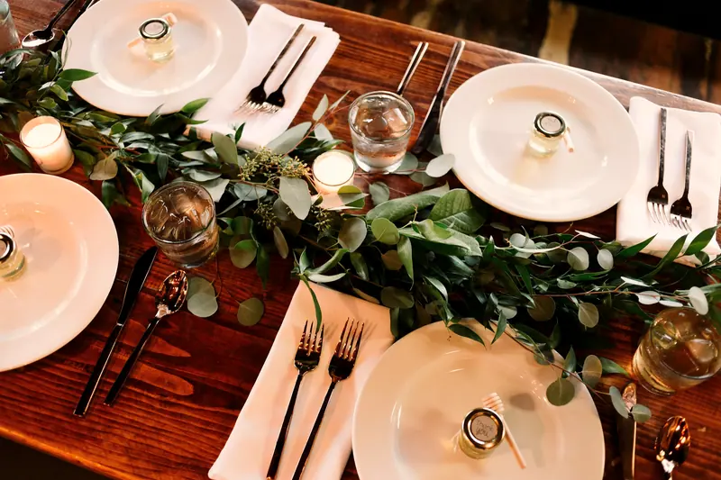
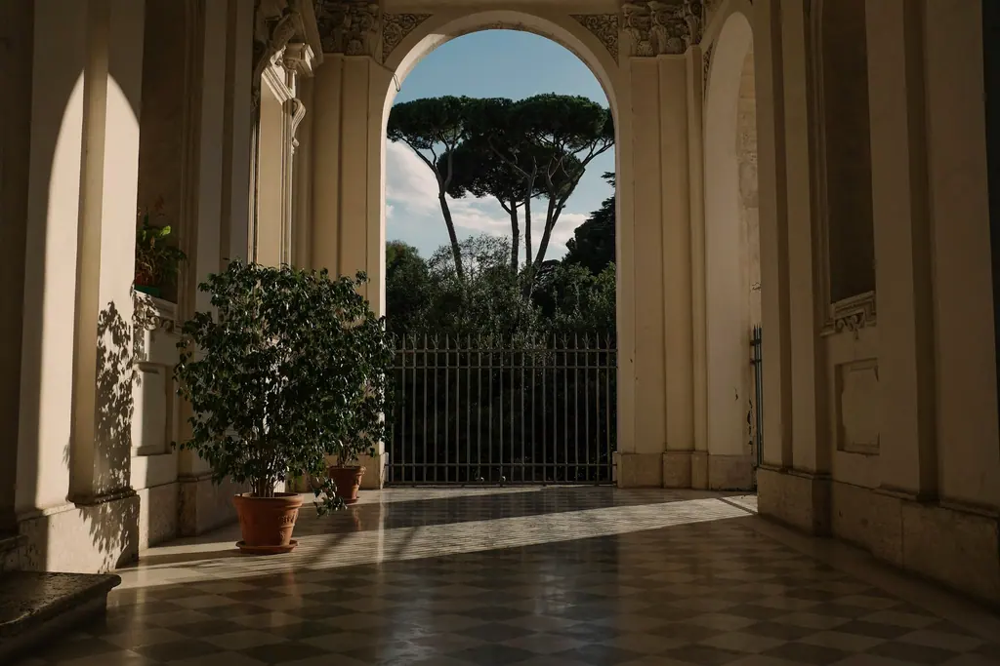
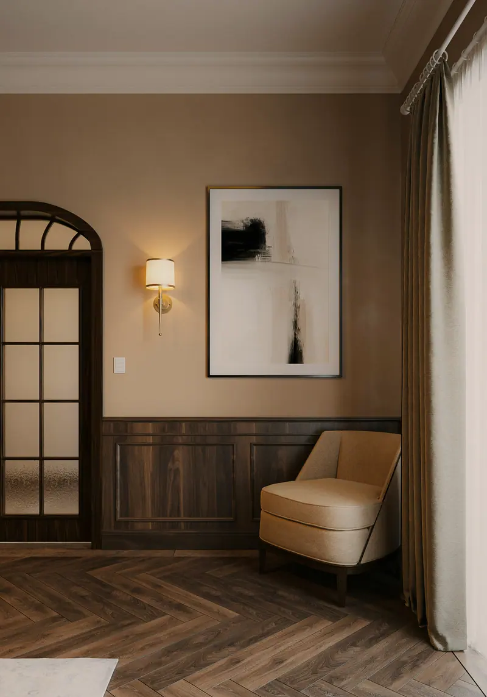
Le domande dei proprietari.
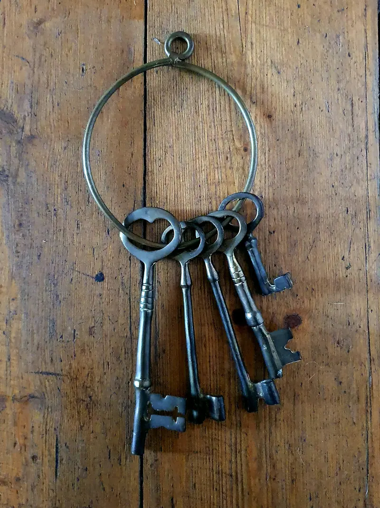
Ne ha un'altra? Ci chiami: i consulenti rispondono tutti i giorni, compresi i festivi.
Quanto costa la valutazione?
Niente. Né la stima online né il sopralluogo del consulente. E non la impegna a darci l'incarico.
Quanto è affidabile la stima online?
È un intervallo, non un prezzo. Parte dalla zona, dai metri e dallo stato della casa. Non conosce la luce, il palazzo, l'affaccio: per questo la valutazione vera la fa un consulente, di persona.
Quanto ci vuole a vendere?
Dipende dalla casa, dal prezzo e dal momento. Per questo non diamo tempi prima di averla vista: sarebbe una promessa a vuoto. Dopo il sopralluogo il consulente le dice cosa aspettarsi, con i dati della sua zona.
Si può vendere senza annunci pubblici?
Sì, se lo desidera. Lo dice al consulente e la casa viene presentata solo a persone selezionate: niente cartello, niente annuncio sui portali.
Cosa serve per cominciare?
Per la prima telefonata, niente. Per il sopralluogo aiuta avere a portata di mano l'atto di provenienza e la planimetria catastale. Il resto delle carte lo guardiamo insieme.
Seguite anche case fuori Roma?
Sì. A Cortina d'Ampezzo seguiamo immobili di pregio, e ci affidano case anche in altre località. Lì la stima non si fa online: ne parla direttamente con un consulente.
Avete compratori dall'estero?
Roma e Cortina sono cercate anche da chi vive all'estero. Per questo la presentazione della casa può uscire anche in inglese. Di chi sta cercando oggi nella sua zona le parla il consulente, al sopralluogo.
Cosa succede se cambio idea?
Niente. Fino alla firma dell'incarico non ha nessun obbligo, e non le chiediamo spiegazioni. Dopo la firma valgono le condizioni scritte nell'incarico, che legge con calma prima di firmare.
Chi fa le foto?
Immobildream. Fotografie, video e virtual tour li organizziamo noi, quando la casa è pronta e la luce è quella giusta.
Quanto costa la vostra provvigione?
Si concorda di persona, insieme alla strategia, prima di firmare qualsiasi cosa. La trova scritta nell'incarico.
Chi vede i miei dati?
Immobildream, e nessun altro. Servono a richiamarla per la valutazione. Il suo nome e la sua casa non compaiono mai nelle nostre pagine.
Ho più di una casa. Da dove comincio?
Da quella che vuole, oppure da tutte insieme. Molti dei nostri clienti hanno più immobili: in quel caso il consulente guarda l'intero patrimonio e le dice da dove conviene partire.

Il primo passo è sapere quanto vale. Il secondo è un caffè in via Dora.
Dove siamo
Via Dora 2, RomaQuartiere Coppedè
Quando
Consulenti tutti i giorni,compresi i festivi